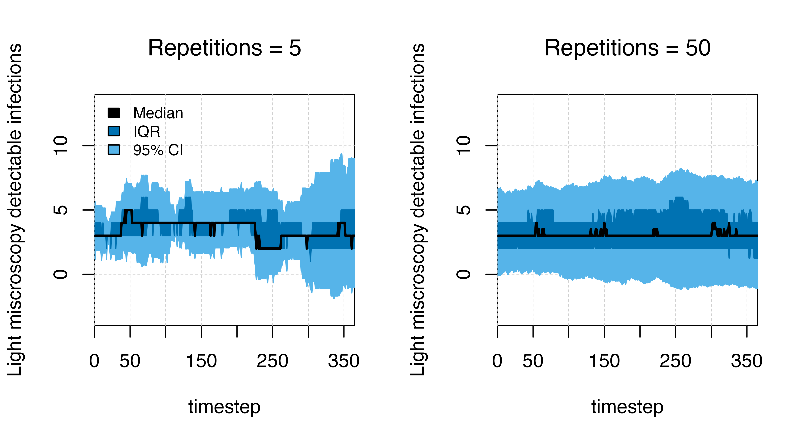

Variation.Rmd
# Load the requisite packages:
library(malariasimulation)
# Set colour palette:
cols <- c("#E69F00", "#56B4E9", "#009E73", "#F0E442", "#0072B2", "#D55E00", "#CC79A7")
set.seed(555)
knitr::opts_chunk$set(
collapse = TRUE,
comment = "#>",
dpi=300,
fig.width=7
)malariasimulation is a stochastic, individual-based
model and, as such, simulations run with identical parameterisations
will generate non-identical, sometimes highly variable, outputs. To
illustrate this, we will compare the prevalence and incidence of malaria
over a year in simulations with a small and a larger population. Then we
will demonstrate how this variation can be estimated by running multiple
simulations using the run_simulation_with_repetitions
function.
First, we will create a few plotting functions to visualise outputs.
plot_prev <- function(output, ylab = TRUE, ylim = c(0,1)){
if (ylab == TRUE) {
ylab = "Prevalence in children aged 2-10 years"
} else {ylab = ""}
plot(x = output$timestep, y = output$n_detect_lm_730_3650 / output$n_age_730_3650,
type = "l", col = cols[3], ylim = ylim,
xlab = "Time (days)", ylab = ylab, lwd = 1,
xaxs = "i", yaxs = "i")
grid(lty = 2, col = "grey80", lwd = 0.5)
}
plot_inci <- function(output, ylab = TRUE, ylim){
if (ylab == TRUE) {
ylab = "Incidence per 1000 children aged 0-5 years"
} else {ylab = ""}
plot(x = output$timestep, y = output$n_inc_clinical_0_1825 / output$n_age_0_1825 * 1000,
type = "l", col = cols[5], ylim = ylim,
xlab = "Time (days)", ylab = ylab, lwd = 1,
xaxs = "i", yaxs = "i")
grid(lty = 2, col = "grey80", lwd = 0.5)
}
aggregate_function <- function(df){
tmp <- aggregate(
df$n_detect_lm_730_3650,
by=list(df$timestep),
FUN = function(x) {
c(median = median(x),
lowq = unname(quantile(x, probs = .25)),
highq = unname(quantile(x, probs = .75)),
mean = mean(x),
lowci = mean(x) - 1.96*sd(x),
highci = mean(x) + 1.96*sd(x)
)
}
)
data.frame(cbind(t = tmp$Group.1, tmp$x))
}
plot_variation_function <- function(df, title_str){
plot(type="n", xlim=c(0,max(df$t)),
c(1,1),
ylim = c(-4, 14),
xaxs = "i", yaxs = "i",
xlab = 'timestep', ylab ='Light miscroscopy detectable infections', main = title_str,
font.main = 1)
grid(lty = 2, col = "grey80", lwd = 0.5)
polygon(x = c(df$t,rev(df$t)), y = c(df$highci, rev(df$lowci)), col = cols[2], border = cols[2])
polygon(x = c(df$t,rev(df$t)), y = c(df$highq, rev(df$lowq)), col = cols[5], border = cols[5])
points(x = df$t, y = df$median, type = "l", ylim = c(25,40), lwd = 2, col = "black")
}We will use the get_parameters() function to generate a
list of parameters, accepting the default values, for two different
population sizes and use the set_equilibrium() function to
initialise the model at a given entomological inoculation rate (EIR).
The only parameter which changes between the two parameter sets is the
argument for human_population.
# A small population
simparams_small <- get_parameters(list(
human_population = 1000,
clinical_incidence_rendering_min_ages = 0,
clinical_incidence_rendering_max_ages = 5 * 365,
individual_mosquitoes = FALSE
))
simparams_small <- set_equilibrium(parameters = simparams_small, init_EIR = 50)
# A larger population
simparams_big <- get_parameters(list(
human_population = 10000,
clinical_incidence_rendering_min_ages = 0,
clinical_incidence_rendering_max_ages = 5 * 365,
individual_mosquitoes = FALSE
))
simparams_big <- set_equilibrium(parameters = simparams_big, init_EIR = 50)The n_detect_lm_730_3650 output below shows the total
number of individuals in the age group rendered (here, 730-3650
timesteps or 2-10 years) who have microscopy-detectable malaria. Notice
that the output is smoother at a higher population.
Some outcomes will be more sensitive than others to stochastic variation even with the same population size. In the plots below, prevalence is smoother than incidence even at the same population. This is because prevalence is a measure of existing infection, while incidence is recording new cases per timestep.
# A small population
output_small_pop <- run_simulation(timesteps = 365, parameters = simparams_small)
# A larger population
output_big_pop <- run_simulation(timesteps = 365, parameters = simparams_big)
# Plotting
par(mfrow = c(2,2))
plot_prev(output_small_pop, ylim = c(0.5, 0.8)); title(expression(paste(italic(Pf),"PR"[2-10], " at n = 1,000")))
plot_inci(output_small_pop, ylim = c(0, 25)); title("Incidence per 1000 children at n = 1,000", cex.main = 1, font.main = 1)
plot_prev(output_big_pop, ylim = c(0.5, 0.8)); title(expression(paste(italic(Pf),"PR"[2-10], " at n = 10,000")))
plot_inci(output_big_pop, ylim = c(0, 25)); title("Incidence per 1000 children at n = 10,000", cex.main = 1, font.main = 1)With stochastic models, random elimination of malaria in a small population with low transmisison may happen. In the example below, we run two simulations: one with a very small population, and one with a larger population. There is stochastic fade out (elimination) in the smaller population, while the larger population has stable transmission over time. For this reason, it is important to run models with large-enough populations to avoid stochastic elimination.
# A small population
simparams_small <- get_parameters(list(
human_population = 50,
clinical_incidence_rendering_min_ages = 0,
clinical_incidence_rendering_max_ages = 5 * 365,
individual_mosquitoes = FALSE
))
simparams_small <- set_equilibrium(parameters = simparams_small, init_EIR = 1)
# A larger population
simparams_big <- get_parameters(list(
human_population = 1000,
clinical_incidence_rendering_min_ages = 0,
clinical_incidence_rendering_max_ages = 5 * 365,
individual_mosquitoes = FALSE
))
simparams_big <- set_equilibrium(parameters = simparams_big, init_EIR = 1)
set.seed(444)
# A small population
output_small_pop <- run_simulation(timesteps = 365 * 2, parameters = simparams_small)
# A larger population
output_big_pop <- run_simulation(timesteps = 365 * 2, parameters = simparams_big)
# Plotting
par(mfrow = c(1, 2))
plot_prev(output_small_pop, ylim = c(0, 0.2)); title(expression(paste(italic(Pf),"PR"[2-10], " at n = 50")))
plot_prev(output_big_pop, ylab = FALSE, ylim = c(0, 0.2)); title(expression(paste(italic(Pf),"PR"[2-10], " at n = 1,000")))We can estimate the variation in the number of detectable cases by
repeating the simulation several times using the
run_simulation_with_repetitions() function. The functions
requires arguments for repetitions (the number of repeat
simulations) and the option of whether to run simulations in parallel
(where available: parallel = T), in addition to the
standard timesteps and parameter list.
simparams <- get_parameters() |> set_equilibrium(init_EIR = 1)
output_few_reps <- run_simulation_with_repetitions(
timesteps = 365,
repetitions = 5,
overrides = simparams,
parallel=TRUE
)
output_many_reps <- run_simulation_with_repetitions(
timesteps = 365,
repetitions = 50,
overrides = simparams,
parallel=TRUE
)
# Aggregate the data
df_few <- aggregate_function(output_few_reps)
df_many <- aggregate_function(output_many_reps)
par(mfrow = c(1,2))
plot_variation_function(df = df_few, title_str = "Repetitions = 5")
legend("topleft", legend = c("Median", "IQR", "95% CI"), ncol = 1,
fill = c("black", cols[5], cols[2]), cex = 0.8, bty = "n")
plot_variation_function(df = df_many, title_str = "Repetitions = 50")